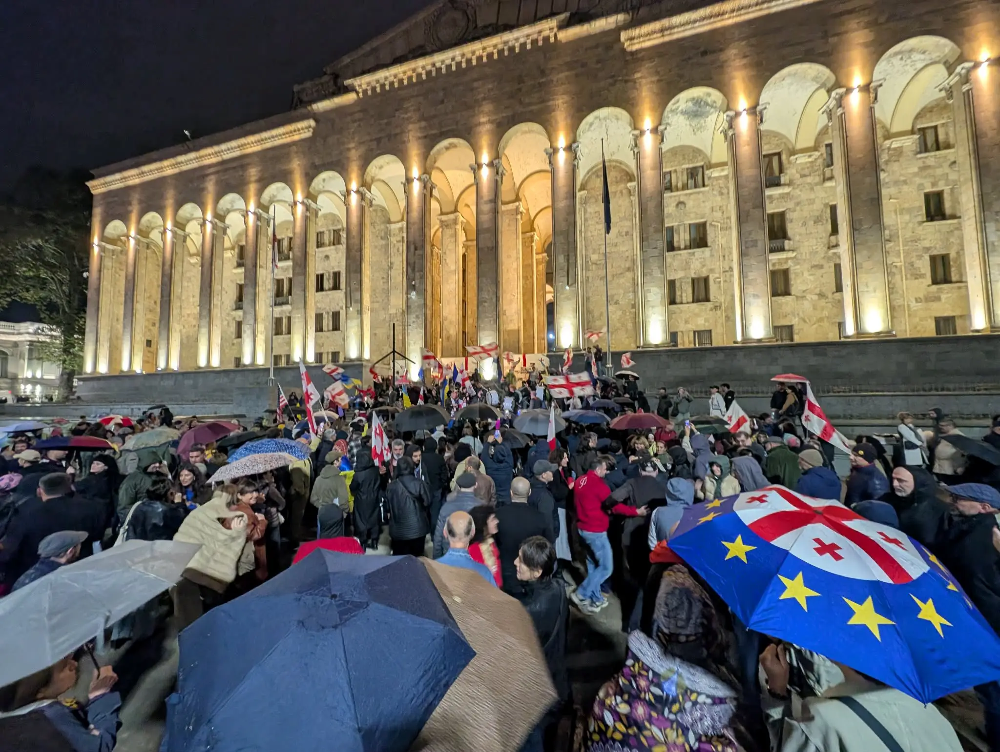

Tbilisi, päivä 700

Keskiviikkona 28. lokakuuta tuli täyteen 700 päivää siitä, kun Georgiassa alkoi nykyinen, EU-jäsenyysneuvottelujen keskeyttämispäätöksestä käynnistynyt protestiaalto. Se jatkoi jo lokakuun 2024 vilpillisinä pidettyjen parlamenttivaalien jälkeen alkaneita mielenosoituksia.
26. lokakuuta 2024 maassa järjestettiin parlamenttivaalit, joissa Georgialainen Unelma (Georgian Dream, GD) julistettiin vaalien voittajaksi noin 54 prosentin äänimäärällä. Tulosta vastustettiin laajasti ja jopa maan presidentti Salome Zourabichvili vaati vaalien tutkimista ja uusia vaaleja. Eikä suinkaan syyttä. . Hän meni pidemmälle ja vei lokakuun 2024 vaalien lainmukaisuuden perustuslakituomioistuimen käsiteltäväksi vedoten muun muassa äänestyssalaisuuden loukkaamiseen. Läpinäkyvien äänestyslippujen vuoksi äänestäjien valinnat saattoivat olla tunnistettavissa. Tuomioistuin kieltäytyi käsittelemästä hänen valitustaan asiasisällön osalta, joten hänen esittämänsä väitteet jäivät ratkaisematta. Tämä luonnollisesti herättää kysymyksiä oikeuslaitoksen riippumattomuudesta. Kansainväliset vaalitarkkailijat havaitsivat vaalien alla laajaa äänestäjiin kohdistunutta painostusta, uhkailua, vaalisalaisuuden vaarantamista ja vaalimenettelyyn liittyviä epäjohdonmukaisuuksia. Euroopan parlamenttikin kuvasi vaaleja päätöslauselmassaan vakavien väärinkäytösten leimaamiksi ja totesi, etteivät ne olleet vapaat tai oikeudenmukaiset. Tässä on erityisesti vaarantunut kansalaisten luottamus yhteiskuntaan ja sen toimintoihin.
Georgian hallitus ilmoitti 28. marraskuuta 2024 keskeyttävänsä EU-jäsenyysneuvottelujen avaamiseen tähtäävän prosessin vuoteen 2028 asti. Protestoijilla ja hallituksen toiminnan arvostelijoilla oli kuitenkin kohtalaisen vähän syitä uskoa, että prosessi ylipäätään jatkuisi. Ilmoitus lisäsi kansalaisten ärtymystä ja kiihdytti protesteja, jotka ovat jatkuneet tähän päivään saakka.
Georgialainen Unelma -puolueen politiikkaa on arvosteltu Venäjän etuja hyödyttäväksi ja vallan keskittämiseen tähtääväksi. Puolue on vallan kahvassa toteuttanut runsaasti tulkintansa mukaisia kansallista turvallisuutta ja sisäistä harmoniaa edistäviä toimia. Kysymys kuuluukin, miten meni näin niinkuin omasta mielestä? Lain ja oikeuden kansantalkoissa jokainen on näköjään joutunut uhraamaan jotain. Kansalaisjärjestöt, oppositio ja media vapautensa, rahoituksensa ja toimintaedellytyksensä. Georgialainen Unelma puolestaan jalouttaan uhrasi kansalaisten oikeuksia ja vapautta. Jokainen jotakin. Puolue on perustellut toimiaan kansallisen turvallisuuden, suvereniteetin ja yhteiskunnallisen vakauden puolustamisella. Käytännössä puolue on säätänyt lakeja, jotka velvoittavat tietyt ulkomailta merkittävää rahoitusta saavat järjestöt ja tiedotusvälineet rekisteröitymään vieraan vallan etuja edustaviksi. Myöhemmillä lakimuutoksilla ulkomaisten avustusten saamista on lisäksi sidottu hallituksen hyväksyntään. Myös mielenosoituksia koskevia sääntöjä on kiristetty ja riippumattoman median toimintamahdollisuuksia on kavennettu. Kun kansalaisyhteiskunnan rahoitusta valvotaan, kriittisen median toimintaa rajoitetaan ja mielenosoittamisen riskejä kasvatetaan, kyse ei ole enää vain yksittäisistä hallinnollisista uudistuksista. Kyse on siitä, millaiseksi vallan ja kansalaisten välinen suhde halutaan rakentaa. Puolueeseen liittyy vahvasti oligarkkien valta. GD ei luonnollisesti itseään kuvaa venäjämielisenä, mutta käytännön toimet antavat viitteitä siitä, että sen politiikka hyödyttää Venäjän tavoitteita. Hallitus ilmoitti keskeyttävänsä EU-jäsenyysneuvottelujen avaamiseen tähtäävän prosessin vuoteen 2028 saakka. Sen toimet ovat samalla heikentäneet suhteita länteen ja hyödyttäneet Venäjän tavoitteita Georgian suunnan suhteen. Sen toimintatavoissa on nähtävissä paljon yhtäläisyyksiä venäläiseen tapaan kohdata oppositio ja kansalaisaktivismi. Myös oikeuslaitoksen riippumattomuutta on kyseenalaistettu. Poliittisen vallan vaikutusta tuomioistuimiin, syyttäjälaitokseen ja korruption tutkintaan on arvosteltu toistuvasti.
Sitten päästään itse protesteihin. Syyt protesteille ovat ymmärrettävät. Georgian kansalaiset haluavat maan, jossa kunnioitetaan demokratiaa ja oikeusvaltioperiaatetta. He haluavat olla EU-maa, siitä huolimatta että matkaa siihen vielä on. Protestoijat siis eivät vastusta vain yksittäisiä lakeja tai hallituksen päätöksiä. He vaativat Georgian demokraattisen suunnan palauttamista, oikeusvaltion ja kansalaisvapauksien turvaamista sekä mahdollisuutta vaikuttaa maansa tulevaisuuteen ilman pelkoa painostuksesta tai väkivallasta. Monille keskeinen kysymys on myös Georgian eurooppalainen suunta: EU-jäsenyys ei ole vain ulkopoliittinen tavoite, vaan siihen liitetään toive oikeudenmukaisemmasta yhteiskunnasta, toimivasta demokratiasta ja suojasta mielivaltaiselta vallankäytöltä. Vaatimuksiin ovat kuuluneet myös uudet, aidosti vapaat ja oikeudenmukaiset vaalit sekä vastuu protestoijiin kohdistuneesta väkivallasta. Kyse ei siis ole vain siitä, kuka maata hallitsee, vaan myös siitä, millaisin ehdoin sitä hallitaan.
Kansalaiset ovat kadulla protestoineet tilanteeseen nähden rauhallisesti. Protestit ovat pääosin pysyneet rauhanomaisina viranomaisten kovista otteista huolimatta. Ihmiset ovat yksinkertaisesti epätoivoisia. Protestien sitkeyttä on perusteltu kysymyksellä: mitä muuta me voimme, kun oikeusvaltio ja turvallinen yhteiskunta viedään pois? Protestoijia on kohdeltu todella väkivaltaisesti ja epäreilusti viranomaisten puolelta. Ihmisiin on kohdistettu suhteettoman kovia voimakeinoja, mielivaltaisia pidätyksiä ja pahoinpitelyä myös pidätysten jälkeen. Naisprotestoijat ovat kertoneet seksuaalisesta uhkailusta, häirinnästä ja väkivallasta. Joulukuussa 2024 georgialaiset kansalaisjärjestöt julkaisivat yhteisen lausunnon, jossa ne kertoivat naispuolisten mielenosoittajien raportoimista raiskausuhkauksista, seksuaalisesta häirinnästä ja muusta nöyryyttävästä kohtelusta pidätysten yhteydessä. Georgiassa oppositiopoliitikkojen koteihin on tehty etsintöjä ja heitä on vangittu poliittisesti motivoituina pidetyillä perusteilla. Samoja toimenpiteitä on tehty myös muihin kansalaisaktivisteihin. Ihmiset kuitenkin jatkavat protestointia, vaikka seuraukset voivat olla heille henkilökohtaisesti vakavia. Se kertoo siitä, että he kokevat oman vapautensa ja maansa tulevaisuuden olevan pelissä. Enkä ihmettele sitä yhtään, kun ottaa huomioon sen, miten vähän nykyinen hallinto on antanut syitä luottaa itseensä.
Miksi suomalainen poliitikon raakile sitten kirjoittaa aiheesta? Tunnen jossain määrin Neuvostoliitosta irtaantuneiden maiden historiaa ja ajatusmallia. Venäjä hyökkäsi Georgiaan vuonna 2008. Sen seurauksena Venäjä miehittää edelleen osia Georgian kansainvälisesti tunnustetusta alueesta Abhasiassa ja Etelä-Ossetiassa. Maani historian pohjalta koen sympatiaa jokaista maata kohtaan, jotka joutuvat Venäjän naapurina selviämään ilman Naton jäsenyyden tuomaa turvaa. Lähipiirissäni on georgialaisia, jotka ovat pyytäneet minua jakamaan tietoisuutta heidän kotimaan tilanteesta. Teen sen mielelläni. Tekstini ei ole syväanalyysi. Haluan antaa tilaa niiden ihmisten kertomuksille ja vaatimuksille, jotka Tbilisissä osoittavat mieltään elämänsä ja oikeuksiensa puolesta, satoi tai paistoi. Toivon, että jonain kauniina päivänä Mustanmeren itäpuolella olisi EU-maa Georgia, jossa toteutuvat oikeusvaltioperiaatteet ja ihmisoikeudet. Uskon, että Georgiassa on tulevaisuudessa mahdollista nähdä demokraattinen vallanvaihto ja oikeusvaltion vahvistuminen. Nykyinen kehityssuunta ei kuitenkaan anna siihen takeita. Toivoa ylläpitää se, että kansalaisyhteiskunta ja mielenosoittajat jatkavat toimintaansa kasvavista riskeistä huolimatta.
Jos haluat aiheesta lukea lisää, täältä löytyy lisää tietoa:
Vaalit
- ETYJ/ODIHR: Georgian vaalien jälkeen (20.12.2024) – Tiedote vaalitarkkailun loppuraportista. Raportin mukaan äänestäjiin kohdistunut painostus ja vaalisalaisuuden vaarantuminen heikensivät vaaliprosessin luotettavuutta.
- Euroopan parlamentin päätöslauselma Georgian tilanteesta – Parlamentin kannanotto Georgian vaalien jälkeiseen tilanteeseen.
Lainsäädäntö ja kansalaisyhteiskunta
- Civil.ge: apurahalain muutokset (16.4.2025) – Georgian parlamentti hyväksyi lakimuutokset, joiden mukaan ulkomaisten rahoittajien on saatava hallituksen suostumus ennen apurahojen myöntämistä paikallisille järjestöille.
- Civil.ge: ulkomaisten agenttien rekisteröintilaki – Selvitys ulkomaisten agenttien rekisteröintilaista Georgiassa.
Poliisiväkivalta ja mielenosoitusten tukahduttaminen
- Human Rights Watch: poliisiväkivalta mielenosoittajia vastaan (23.12.2024) – Raportti, joka dokumentoi pahoinpitelyjä ja kaltoinkohtelua mielenosoittajia kohtaan Tbilisissä sekä syytteiden puuttumista poliisin toiminnasta.
- GYLA ja muut järjestöt: ihmisoikeuskriisi vaalien jälkeen (14.5.2025) – Yhdentoista järjestön dokumentaatioraportti ajalta 28.11.2024–28.2.2025. Se perustuu 117 haastatteluun, joista 91 kertoi poliisin väkivallasta.
Naismielenosoittajiin kohdistunut väkivalta
- Georgialaisten järjestöjen yhteinen lausunto (28.12.2024) – Pidätettyjen naisten kertomuksia pahoinpitelyistä, seksuaalisesta häirinnästä ja raiskausuhkauksista. Kyse on järjestöjen keräämistä kertomuksista, ei tuomioistuimen vahvistamista tosiseikoista.
Ratsiat ja pidätykset
- OC Media: poliisin ratsiat (5.12.2024) – Uutinen oppositiopuolueiden toimistoihin ja protestien järjestäjien koteihin tehdyistä ratsioista sekä opposition johtohahmojen pidätyksistä.